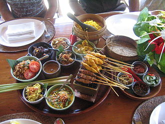
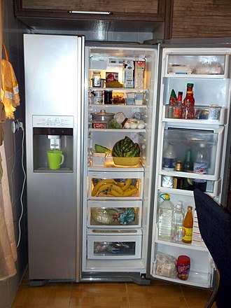
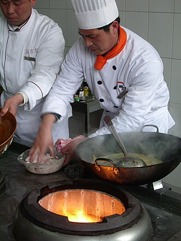

RESTAURANT
A restaurant is a place where you can eat a meal and pay for it. In restaurants your food is usually served to you at your table by a waiter or waitress.
FEATURES OF RESTAURENT
1.Restaurants provide us with different cuisines of food to satisfy your hunger..
2.The restaurant fades into the background as if it were an all surrounding television and you are the only real thing I've seen all day.
3.The restaurant feels as if I have entered a dreamland, the happy chatter, the fragrances, the easy and natural colours.
DIFFERENT PRESENTATIONS
FOOD PRESENTATION
Texture plays a crucial role in the enjoyment of eating foods. Contrasts in textures, such as something crunchy in an otherwise smooth dish, may increase the appeal of eating it.
ANIMAL PRESENTATION
The preparation of animal-based food usually involves slaughter, evisceration, hanging, portioning, and rendering. In developed countries, this is usually done outside the home in slaughterhouses, which are used to process animals masse for meat production. Many countries regulate their slaughterhouses by law.
RAW FOOD PRESENTATION

Certain cultures highlight animal and vegetable foods in a raw state. Salads consisting of raw vegetables or fruits are common in many cuisines. Sashimi in Japanese cuisine consists of raw sliced fish or other meat, and sushi often incorporates raw fish or seafood.
COOKING
The term "cooking" encompasses a vast range of methods, tools, and combinations of ingredients to improve the flavor or digestibility of food. Cooking technique, known as culinary art, generally requires the selection, measurement, and combining of ingredients in an ordered procedure in an effort to achieve the desired result.